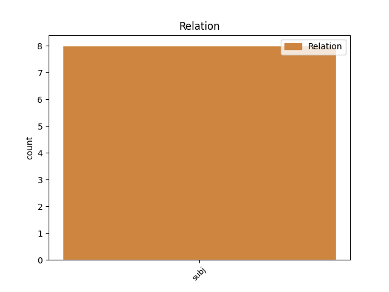
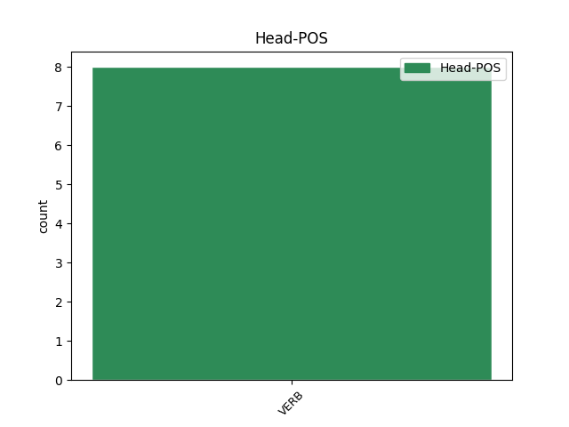
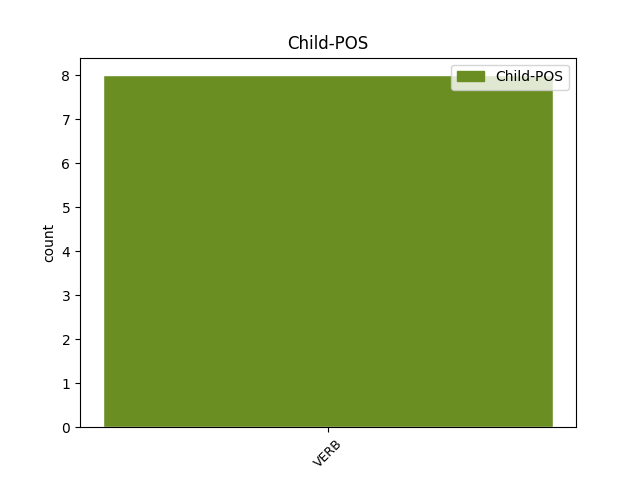

Distribution of features within this leaf



Agreement Rules sorted by frequency.
- When the dependent token is the subject(subj) of the head token, and the head token is VERB and the dependent token is VERB.
1 Ale _ _ _ _ 0 _ _ _
2 co _ _ _ _ 0 _ _ _
3 se _ _ _ _ 0 _ _ _
4 stalo stát VERB VpNS----R-AA--- Gender=Neut|Number=Sing|Polarity=Pos|Tense=Past|VerbForm=Part|Voice=Act 6 subj _ SpaceAfter=No
5 , _ _ _ _ 0 _ _ _
6 stalo stát VERB VpNS----R-AA--- Gender=Neut|Number=Sing|Polarity=Pos|Tense=Past|VerbForm=Part|Voice=Act 0 _ _ _
7 se _ _ _ _ 0 _ _ _
8 , _ _ _ _ 0 _ _ _
9 a _ _ _ _ 0 _ _ _
10 nic _ _ _ _ 0 _ _ _
11 se _ _ _ _ 0 _ _ _
12 nedalo _ _ _ _ 0 _ _ _
13 už _ _ _ _ 0 _ _ _
14 napravit _ _ _ _ 0 _ _ _
15 . _ _ _ _ 0 _ _ _
Disagree Examples:
1 Aha _ _ _ _ 0 _ _ _
2 , _ _ _ _ 0 _ _ _
3 blesklo blesknout VERB VpNS----R-AA--1 Gender=Neut|Number=Sing|Polarity=Pos|Tense=Past|VerbForm=Part|Voice=Act 0 _ _ _
4 mi _ _ _ _ 0 _ _ _
5 hlavou _ _ _ _ 0 _ _ _
6 , _ _ _ _ 0 _ _ _
7 řekli říci VERB VpMP----R-AA--- Animacy=Anim|Gender=Masc|Number=Plur|Polarity=Pos|Tense=Past|VerbForm=Part|Voice=Act 3 subj _ _
8 mu _ _ _ _ 0 _ _ _
9 moje _ _ _ _ 0 _ _ _
10 výsledky _ _ _ _ 0 _ _ _
11 a _ _ _ _ 0 _ _ _
12 on _ _ _ _ 0 _ _ _
13 mi _ _ _ _ 0 _ _ _
14 chce _ _ _ _ 0 _ _ _
15 lhát _ _ _ _ 0 _ _ _
16 , _ _ _ _ 0 _ _ _
17 uklidňovat _ _ _ _ 0 _ _ _
18 mě _ _ _ _ 0 _ _ _
19 . _ _ _ _ 0 _ _ _
1 Pak _ _ _ _ 0 _ _ _
2 jsme _ _ _ _ 0 _ _ _
3 tam _ _ _ _ 0 _ _ _
4 chvíli _ _ _ _ 0 _ _ _
5 jen _ _ _ _ 0 _ _ _
6 tak _ _ _ _ 0 _ _ _
7 stáli _ _ _ _ 0 _ _ _
8 a _ _ _ _ 0 _ _ _
9 mně _ _ _ _ 0 _ _ _
10 vrtalo vrtat VERB VpNS----R-AA--- Gender=Neut|Number=Sing|Polarity=Pos|Tense=Past|VerbForm=Part|Voice=Act 0 _ _ _
11 hlavou _ _ _ _ 0 _ _ _
12 , _ _ _ _ 0 _ _ _
13 proč _ _ _ _ 0 _ _ _
14 mě _ _ _ _ 0 _ _ _
15 táta _ _ _ _ 0 _ _ _
16 nechal nechat VERB VpMS----R-AA--- Animacy=Anim|Gender=Masc|Number=Sing|Polarity=Pos|Tense=Past|VerbForm=Part|Voice=Act 10 subj _ _
17 vytáhnout _ _ _ _ 0 _ _ _
18 ze _ _ _ _ 0 _ _ _
19 třídy _ _ _ _ 0 _ _ _
20 kvůli _ _ _ _ 0 _ _ _
21 věcem _ _ _ _ 0 _ _ _
22 , _ _ _ _ 0 _ _ _
23 o _ _ _ _ 0 _ _ _
24 kterých _ _ _ _ 0 _ _ _
25 budeme _ _ _ _ 0 _ _ _
26 mluvit _ _ _ _ 0 _ _ _
27 určitě _ _ _ _ 0 _ _ _
28 i _ _ _ _ 0 _ _ _
29 při _ _ _ _ 0 _ _ _
30 večeři _ _ _ _ 0 _ _ _
31 . _ _ _ _ 0 _ _ _
1 Teprve _ _ _ _ 0 _ _ _
2 doma _ _ _ _ 0 _ _ _
3 za _ _ _ _ 0 _ _ _
4 několik _ _ _ _ 0 _ _ _
5 hodin _ _ _ _ 0 _ _ _
6 , _ _ _ _ 0 _ _ _
7 když _ _ _ _ 0 _ _ _
8 z _ _ _ _ 0 _ _ _
9 něho _ _ _ _ 0 _ _ _
10 opadl _ _ _ _ 0 _ _ _
11 ten _ _ _ _ 0 _ _ _
12 divný _ _ _ _ 0 _ _ _
13 hněv _ _ _ _ 0 _ _ _
14 , _ _ _ _ 0 _ _ _
15 došlo dojít VERB VpNS----R-AA--- Gender=Neut|Number=Sing|Polarity=Pos|Tense=Past|VerbForm=Part|Voice=Act 0 _ _ _
16 mu _ _ _ _ 0 _ _ _
17 v _ _ _ _ 0 _ _ _
18 plném _ _ _ _ 0 _ _ _
19 dosahu _ _ _ _ 0 _ _ _
20 , _ _ _ _ 0 _ _ _
21 co _ _ _ _ 0 _ _ _
22 udělal udělat VERB VpMS----R-AA--- Animacy=Anim|Gender=Masc|Number=Sing|Polarity=Pos|Tense=Past|VerbForm=Part|Voice=Act 15 subj _ SpaceAfter=No
23 ; _ _ _ _ 0 _ _ _
1 Vrtalo vrtat VERB VpNS----R-AA--- Gender=Neut|Number=Sing|Polarity=Pos|Tense=Past|VerbForm=Part|Voice=Act 0 _ _ _
2 mi _ _ _ _ 0 _ _ _
3 sice _ _ _ _ 0 _ _ _
4 hlavou _ _ _ _ 0 _ _ _
5 , _ _ _ _ 0 _ _ _
6 co _ _ _ _ 0 _ _ _
7 chtěl chtít VERB VpMS----R-AA--- Animacy=Anim|Gender=Masc|Number=Sing|Polarity=Pos|Tense=Past|VerbForm=Part|Voice=Act 1 subj _ SpaceAfter=No
8 , _ _ _ _ 0 _ _ _
9 ale _ _ _ _ 0 _ _ _
10 nezavolala _ _ _ _ 0 _ _ _
11 jsem _ _ _ _ 0 _ _ _
12 mu _ _ _ _ 0 _ _ _
13 . _ _ _ _ 0 _ _ _
1 Hned _ _ _ _ 0 _ _ _
2 ho _ _ _ _ 0 _ _ _
3 napadlo napadnout VERB VpNS----R-AA--1 Gender=Neut|Number=Sing|Polarity=Pos|Tense=Past|VerbForm=Part|Voice=Act 0 _ _ _
4 , _ _ _ _ 0 _ _ _
5 v _ _ _ _ 0 _ _ _
6 čí _ _ _ _ 0 _ _ _
7 hlavě _ _ _ _ 0 _ _ _
8 se _ _ _ _ 0 _ _ _
9 ten _ _ _ _ 0 _ _ _
10 nápad _ _ _ _ 0 _ _ _
11 zrodil zrodit VERB VpIS----R-AA--- Animacy=Inan|Gender=Masc|Number=Sing|Polarity=Pos|Tense=Past|VerbForm=Part|Voice=Act 3 subj _ SpaceAfter=No
12 . _ _ _ _ 0 _ _ _